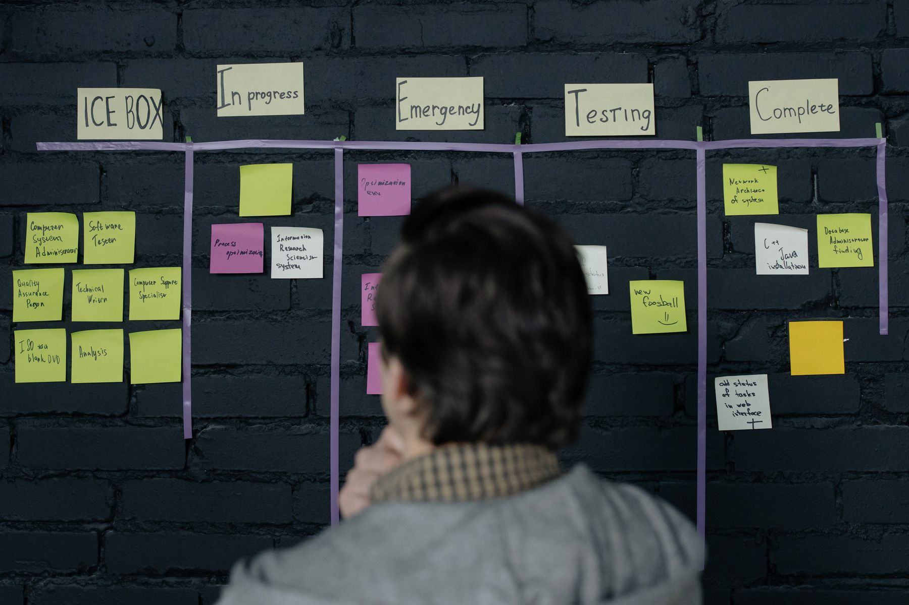

Scrum-Beratung für Teams, die liefern
Viele Teams arbeiten mit Scrum — Sprints, Dailies, ein Board — und liefern trotzdem im alten Tempo. Unsere Scrum-Beratung bringt die Arbeitsweise dahin, wo sie wirkt: klare Rollen, ein Backlog, der priorisiert, und ein Sprint-Rhythmus, an dessen Ende fertige, abgenommene Ergebnisse stehen. Für Produkt- und IT-Teams in Organisationen jeder Größe, DACH-weit.
Ein kurzer Überblick reicht. Wir melden uns werktags innerhalb von 24 Stunden.
Agile Arbeit, die nach Ritual aussieht und beim Liefern stockt
Die Mechanik ist eingeführt — Sprints, Dailies, ein Board — und trotzdem ändert sich am Tempo wenig. Der Grund liegt meist abseits der Methode selbst: Anforderungen kommen im alten Modus, der Product Owner darf kaum frei priorisieren und das Team wird ständig aus dem Sprint gezogen.

Rituale, die wirkungslos bleiben
Dailies, Reviews und Retros laufen — aber als Pflichttermin. Die eigentliche Frage, was den Fluss bremst, bleibt in jedem davon ungestellt.
Product Owner ohne echte Entscheidungsbefugnis
Der Product Owner verwaltet ein Backlog, darf aber kaum entscheiden. Prioritäten kommen weiter von oben, am Sprint vorbei — und das Team baut, was am lautesten gefordert wird.
Team ständig zerrissen
Dieselben Leute stecken im Sprint und im Tagesgeschäft. Jede Unterbrechung kostet doppelt, und am Sprint-Ende ist vieles angefangen, weniges fertig.
Anforderungen im alten Modus
Ein dickes Lastenheft wird in Tickets zerlegt — aber nicht neu gedacht. So bleibt agiles Arbeiten eine andere Verpackung für dasselbe Wasserfall-Vorgehen.
Wir bringen agiles Arbeiten vom Ritual zur Lieferung
Je nachdem, wo Ihr Team steht, setzt die Begleitung anders an: bei der ersten Einführung, beim Schärfen eines laufenden Setups, beim Coaching der Rollen oder beim Verbinden mehrerer Teams. Der gemeinsame Nenner ist immer dasselbe Ziel — schneller fertige Ergebnisse, mit weniger Meetings.
Wir arbeiten mit Ihrem Team, eng an seiner Seite: Wir sitzen in den ersten Sprints mit, hören in Reviews und Retros genau hin und justieren dort, wo der Fluss real hakt. Was bleibt, ist eine Arbeitsweise, die Ihr Team selbst weiterträgt — eine, die eigenständig und dauerhaft verlässlich läuft.
Scrum-Einführung
Ein sauberer Start: Rollen besetzt, ein erster Product Backlog, eine Definition of Done, die hält, und ein Sprint-Rhythmus, der zum Team passt — eingeführt am realen Vorhaben, direkt in der Praxis.
Agile Lieferung schärfen
Ein laufendes agiles Setup, das stockt, ziehen wir wieder in den Takt — Backlog entschlacken, Reviews machen, Retros mit Wirkung und Prioritäten, die wirklich fallen.
Rollen-Coaching
Product Owner und Scrum Master bekommen Rückendeckung in ihrer Rolle — Priorisieren gegen Druck, Hindernisse räumen und Stakeholder aktiv führen, über das bloße Moderieren hinaus.
Mehrere Teams verbinden
Wenn mehr als ein Team an einem Produkt arbeitet, sorgen wir für Abstimmung über die Teams hinweg — gemeinsame Ziele, geklärte Abhängigkeiten, ein Liefertakt, der zusammenpasst.
Vom ersten Sprint zu einem tragfähigen Rhythmus
Nach jedem Schritt entscheiden Sie, ob wir weitermachen. Wir wählen pro Vorhaben das passende Vorgehen — iterativ, wo das Produkt es hergibt, hybrid, wo feste Termine im Spiel sind — und richten den Takt am Ergebnis aus, an der gelieferten Wirkung.
Standort-Bestimmung
Ein kurzer Blick auf das Team: Wie kommt Arbeit herein, wer priorisiert, wo bricht der Fluss. Ergebnis ist eine klare Empfehlung, wo das Vorgehen wirkt und wo nicht.
Rollen & Backlog
Rollen besetzt und abgegrenzt, ein erster geordneter Product Backlog, eine belastbare Definition of Done und ein Sprint-Zuschnitt, der zum Team passt.
Erste Sprints
Wir begleiten die ersten Sprints aktiv mit — Planning, Daily, Review, Retro — und justieren live, wo es klemmt, direkt am realen Sprint.
Rhythmus festigen
Der Takt setzt sich, Abhängigkeiten werden sichtbar gemacht, und bei mehreren Teams sorgen wir für Abstimmung über Teamgrenzen hinweg.
Eigenständigkeit
Scrum Master und Product Owner führen selbst, wir treten zurück — mit dokumentierten Spielregeln und auf Wunsch befristetem Sparring.
Wo Scrum-Begleitung den Unterschied macht
Eine Auswahl der Anlässe, zu denen Teams uns holen. Gemeinsamer Nenner: Es wird agil gearbeitet — oder soll es —, aber das Tempo bleibt aus. Eine stockende Einführung kostet über verlorene Monate weit mehr als die Begleitung, die sie wieder in Gang bringt.
Erste Scrum-Einführung
Ein Team stellt von Plan-getrieben auf agil um — begleitet vom ersten Sprint bis zum tragfähigen Rhythmus.
Festgefahrene Agilität
Sprints laufen, aber nichts wird fertig — wir finden den Bruch im Fluss und beheben ihn.
Produktentwicklung
Ein Produkt-Team braucht klare Priorisierung und einen Backlog, der Richtung gibt und Wünsche in eine klare Reihenfolge bringt.
PO & Scrum Master stärken
Schlüsselrollen sind besetzt, aber unsicher — wir geben ihnen Rückhalt und Handwerkszeug.
Mehrere Teams
Aus einem Team werden mehrere — Abhängigkeiten und gemeinsame Ziele wollen geordnet sein.
Agil trifft Festtermin
Ein fester Liefertermin und agile Arbeit müssen zusammenpassen — wir verbinden beides zu einem gemeinsamen Takt.
Wann passt ein agiler Sprint-Rhythmus, und wann etwas anderes?
Das Framework ist ein starker Ansatz, für viele Vorhaben der richtige und für manche der falsche. Hier, wie sich die gängigen Vorgehensmodelle unterscheiden — als Grundlage, damit Sie selbst mitentscheiden, welches Vorgehen zu Ihrem Vorhaben passt.
Wasserfall
Ein sequenzielles Vorgehen in festen Phasen — passend, wenn Anforderungen und Termin früh feststehen und sich kaum noch ändern. Klare Meilensteine geben Planungssicherheit, wo ein agiler Sprint-Rhythmus zu viel Bewegung erlaubt.
Scrum
Ist ein iteratives Rahmenwerk, das in kurzen Sprints liefert — mit den Rollen Product Owner, Scrum Master und Entwicklungsteam und festen Ereignissen wie Planning, Daily, Review und Retrospektive. Eignet sich, wenn Anforderungen sich am Ergebnis schärfen. Definiert im Scrum Guide von Scrum.org.
Kanban
Macht den Arbeitsfluss sichtbar und begrenzt die parallele Arbeit (WIP) — gut für Teams mit stetig eintreffenden, unterschiedlich großen Aufgaben, bei denen ein fester Sprint-Takt unpassend wäre.
Skalierte Agilität (SAFe)
Wird eingesetzt, wenn skalierte Agilität über mehrere Teams an einem Produkt nötig ist — mit abgestimmten Planungszyklen, damit viele Teams in eine Richtung liefern. Beschrieben von Scaled Agile.
PRINCE2
Steht für ein phasenbasiertes Vorgehen mit festen Entscheidungs-Gates und definierten Rollen — dort sinnvoll, wo Nachweispflichten und formale Freigaben den Takt bestimmen. Herausgegeben von AXELOS.
PMBOK-Wissensbasis
Die Wissensbasis für Auftrag, Risiko und Stakeholder — eine gemeinsame Sprache, die sich gut mit agiler Lieferung verbinden lässt, wenn klassische und agile Anteile nebeneinander laufen. Wissensbasis des Project Management Institute.
Ein Vorgehen, das in jedem Team-Zuschnitt verlässlich greift
Die Aufgaben unterscheiden sich, die Logik bleibt: kurze Schleifen, klare Verantwortung, Retros. Darauf bauen wir auf — ob in der Softwareentwicklung, in einem Produkt-Team oder dort, wo IT und Fachbereich gemeinsam liefern.
Softwareentwicklung
Wo Code im Mittelpunkt steht, sorgt die Arbeitsweise für eine Definition of Done, die Qualität sichert, und für Reviews, in denen wirklich Lauffähiges gezeigt wird.
Produkt-Teams
Wo ein Produkt am Markt wächst, gibt ein priorisierter Backlog Richtung — und verhindert, dass jede Anfrage sofort zur obersten Priorität wird.
Fachbereich & IT
Wo Fachseite und IT zusammen liefern, schafft ein gemeinsamer Rhythmus Verständnis — und löst das Gegeneinander von Anforderung und Umsetzung auf.
Was unsere Scrum-Begleitung von der Standard-Schulung unterscheidet
Am echten Vorhaben
Wir führen die Arbeitsweise an Ihrem realen Backlog ein, mitten in der Praxis. Was Sie lernen, ist sofort das, was Sie morgen tun.
Wirkung vor Ritual
Uns interessiert vor allem, ob das Team schneller fertig wird; die Vollzähligkeit der Zeremonien zählt dabei weniger. Wirkungslose Rituale schaffen wir ab.
Rollen, die entscheiden
Ein Product Owner muss priorisieren dürfen, ein Scrum Master Hindernisse räumen. Wir sorgen dafür, dass beide das Mandat dazu bekommen.
Befristete Begleitung
Unser Ziel ist, dass Ihr Team eigenständig weiterarbeitet. Die Eigenständigkeit steht von Tag eins fest im Plan, als selbstverständlicher Teil des Vorgehens.
Prinzipien, auf die Sie sich verlassen können
Agil wirkt dann, wenn die Begleitung nah an der echten Arbeit ist, benennt, was bremst, und Spuren hinterlässt, die das Team selbst weiterführt. Unsere Methoden sind gängig und erprobt — Ihr Team führt sie eigenständig weiter.
Nähe zur echten Arbeit
Wir sitzen in Sprints und Retros mit. Eine Empfehlung ist nur so gut wie ihr Bezug zum echten Arbeitsalltag des Teams.
Offenheit in der Retro
Was bremst, wird benannt — auch wenn es unbequem ist. Eine Retro, die nichts verändert, ist verlorene Zeit.
Übergabe, die hält
Spielregeln, Rollen und Routinen sind so übergeben, dass der Rhythmus bleibt — eigenständig und dauerhaft.
Welche Fragen hören wir häufiger?
Was kostet eine Scrum-Beratung?
Warum läuft unsere agile Einführung nicht?
Was ist der Unterschied zwischen agil und klassisch?
Brauchen wir ausgebildete Scrum Master im Haus?
Funktioniert Scrum auch außerhalb der Softwareentwicklung?
Wo fangen wir an?
Wie lange dauert eine Scrum-Begleitung?
Begleiten Sie auch mehrere Teams an einem Produkt?
Wie arbeiten Sie mit unseren Entwicklern zusammen und halten ihr Tempo?
Was, wenn Teile unserer Organisation gar nicht agil arbeiten wollen?
Weitere Themen zur Scrum-Beratung
Weiter zur Projektmanagement-Beratung und zu den verwandten Themen im gleichen Bereich.
Agil arbeiten › gemeinsam starten.
Der erste Schritt ist ein Erstgespräch von 30–45 Minuten. Wir klären, wo Ihre agile Arbeit hakt und ob CX der richtige Partner ist. Wenn nicht, verweisen wir auf jemanden, der besser passt.
Erstgespräch anfragen →Welche Fragen klären wir vor Projektbeginn?
Der Ansatz hilft nur, wenn Produktverantwortung, Backlog, Entscheidungswege und Teamfokus stimmen. Wir prüfen, ob die Methode zum Vorhaben passt und was dafür fehlen würde.
Gibt es echte Produktverantwortung?
Wir klären, wer Prioritäten setzen darf und ob Entscheidungen schnell genug getroffen werden.
Ist das Backlog arbeitsfähig?
Wir prüfen Ziele, Zuschnitt, Abhängigkeiten und Definition von fertig, bevor Sprints starten.
Kann das Team fokussiert arbeiten?
Wir betrachten Parallelbelastung, Rollen, Verfügbarkeit und Hindernisse, die den Takt sonst ausbremsen.
Wie wird Nutzen nach jedem Sprint sichtbar?
Wir richten Reviews, Messpunkte und Feedback so ein, dass nicht nur Aktivität, sondern Lieferung sichtbar wird.
Ein wirksames agiles Setup erkennt man nicht daran, dass Zeremonien stattfinden. Entscheidend ist, ob Prioritäten klar sind, ob das Team ungestört liefern kann und ob nach jedem Sprint etwas überprüfbar besser ist. Wir räumen deshalb zuerst die Bremsen weg: unklare Produktverantwortung, zu große Aufgaben, parallele Sonderaufträge und Reviews ohne echte Entscheidung.
Prozesse, Architektur, Change.
Johannes Reusch und Hans-Helmut "Hannes" Scheel führen CEx gemeinsam. Beide begleiten Mandate mit ihrem Team persönlich. Senior- und Executive-Erfahrung für Ihr Projekt von Anfang bis Ende.


- Branchenübergreifend · vom Mittelstand bis zum Konzern
- Strukturiertes Vorgehen · nachvollziehbar und dokumentiert
- DACH-weit tätig